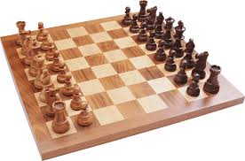
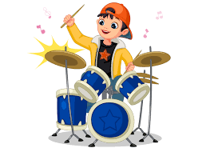

Playing Chess
I love playing chess in my free time. It's a great way to challenge my mind and improve my strategic thinking skills.
Basketball
I enjoy playing basketball with friends and family. It's a fun way to stay active and work on my coordination and teamwork skills.
Playing Guitar
I love playing guitar and learning new songs. It's a great way to relax and express myself creatively.
Playing Drums
I enjoy playing drums in my free time. It's a fun way to let loose and work on my rhythm and coordination skills.
Playing Bass Guitar

I enjoy playing bass guitar in my free time. It's a great way to unwind and express myself creatively.